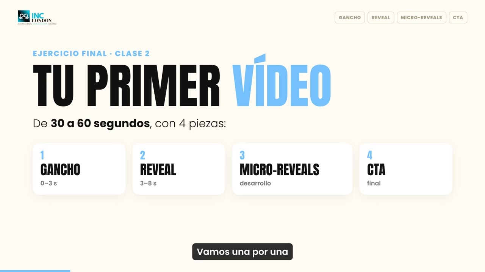
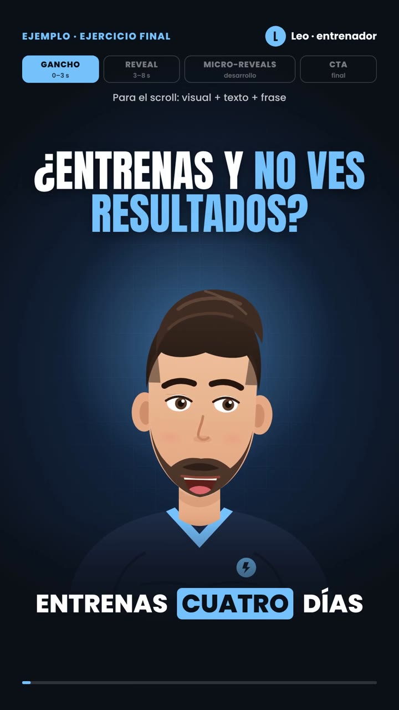

Mira la explicación
1 minuto y medio. Dale al play.

La explicación completa está en el vídeo de la clase, arriba del todo.
Mira el ejemplo de Leo
Así tiene que quedar tu vídeo: de 30 a 60 segundos.

Ideas y ejemplos
Coge el que más se parezca a tu negocio y cámbialo a tu manera.
Lo primero que dices. Tiene que hacer que la gente se pare.
Dolor un problema que le duele
«Si te duele la espalda al levantarte, mira esto.»Fisioterapeuta
«¿Te sangran las encías al cepillarte?»Dentista
Mito algo que todos creen y no es así
«Hacer abdominales no quema la tripa.»Entrenador
«Lavarse el pelo todos los días no lo estropea.»Peluquería
Error lo que hacen mal
«El error que hace que tu piso no se venda.»Inmobiliaria
«Deja de hacer esto si quieres pagar menos impuestos.»Asesoría
Curiosidad algo que no saben
«Nadie te cuenta esto de los restaurantes.»Restaurante
«Lo que nadie te dice antes de comprar un piso.»Inmobiliaria
Resultado un caso real
«Así pasó Marta de no correr nada a hacer 10 km.»Entrenador
«Así quedó la cocina de Pepe en 3 semanas.»Reformas
Lista números concretos
«3 ejercicios que puedes hacer en casa.»Entrenador
«3 platos que nunca debes pedir con prisa.»Restaurante
Polémico una opinión que choca
«El cardio está sobrevalorado.»Entrenador
«No necesitas una web para vender.»Marketing
Pregunta que se vean reflejados
«¿Entrenas y no ves resultados?»Entrenador
«¿Te da vergüenza sonreír en las fotos?»Dentista
«Si [te pasa esto], [lo que pasará].»
«Deja de [error] si quieres [lo que desea].»
«3 cosas que [tu cliente] no sabe sobre [tema].»
«Lo que nadie te cuenta de [tema].»
Justo después del gancho: de qué va, por qué le importa y qué se lleva si se queda.
«Si llevas meses en el gimnasio y te ves igual, seguramente estás cometiendo uno de estos 3 errores. Te los cuento en 30 segundos.»Entrenador
«Si vas a vender tu piso este año, hay 3 cosas que te hacen perder dinero. Te las enseño en un minuto.»Inmobiliaria
«Si te sangran las encías, no lo ignores: si no lo cuidas, va a más. Te cuento las 3 causas más comunes.»Dentista
«Si tienes un restaurante y los martes está vacío, te cuento 3 ideas que funcionan.»Restaurante
Antes de cada punto, una frase que da ganas de seguir viendo. Puedes copiarlas tal cual:
«El primero lo hace casi todo el mundo…»
«Pero el segundo es el que más te frena…»
«Y el tercero, casi nadie lo hace…»
«Este es el que más me preguntan…»
«Y ahora viene el más importante…»
«Al final te digo el que más se repite…»
La última frase. Pide solo una cosa.
Envíos para llegar a gente nueva
«Mándaselo a ese amigo que siempre dice que no tiene tiempo.»
Guardados si es útil
«Guárdalo para cuando vayas a vender tu piso.»
Comentarios para hablar con clientes
«Comenta RUTINA y te la mando.»
Comentarios
«Escríbeme MENÚ y te paso la carta de esta semana.»
Cómo grabarte
Solo necesitas tu móvil. Sigue estos pasos:
- Limpia la cámaraPásale un pañuelo. Parece una tontería, pero se nota muchísimo.
- Móvil en verticalComo cuando haces una videollamada. Apóyalo en algo, a la altura de tus ojos.
- Luz de frentePonte mirando a una ventana. Nunca con la ventana detrás de ti.
- Sitio tranquiloSin ruido y sin eco. Un salón con sofá o cortinas suena mejor que un baño.
- Mira a la cámaraA la lucecita de arriba, no a tu cara en la pantalla. Habla como si hablaras con un amigo.
- Graba por partesUna frase cada vez. Si te equivocas, repite solo esa frase. Luego las juntas.
- Pon subtítulosAl editar en Instagram o TikTok, busca la opción «Subtítulos»: los pone solos.
- Empezar con «Hola, soy…». A nadie le importa todavía quién eres.
- Empezar con tu logo. Son 2 segundos perdidos.
- Tardar en arrancar: coger aire, colocarte, «bueno, pues…».
- Letras pequeñas o tapadas por los botones de la app.
- Prometer algo en el gancho y luego no darlo.
Escribe tu guion
Rellena cada pieza aquí mismo. Si has usado la IA, pega aquí su versión y ajústala a tu manera. Se guarda solo en este móvil u ordenador.
Las 3 capas a la vez. Nunca empieces con «Hola, soy…».
Contexto → por qué le importa → promesa.
Tres puntos de valor. Antes de cada uno, una frase que adelanta lo que viene.
Solo una. ¿Qué quieres que hagan?
¿Te atascas? Mira 3 ejemplos completos
Reveal: «Seguramente estás cometiendo uno de estos 3 errores.»
Puntos: cambiar de rutina cada semana · no subir el peso · dormir poco.
CTA (envíos): «Mándaselo a ese amigo que entrena mucho y no ve cambios.»
Reveal: «No lo ignores: si no lo cuidas, va a más. Te cuento las 3 causas más comunes.»
Puntos: cepillarte muy fuerte · no usar hilo dental · encías inflamadas (si dura, al dentista).
CTA (guardados): «Guárdalo y revísalo la próxima vez que te cepilles.»
Reveal: «Si haces tú tus impuestos, puede que estés pagando de más. Te cuento 3 gastos en los que se equivoca casi todo el mundo.»
Puntos: la cuota de autónomo · parte de los suministros si trabajas en casa · las comidas, solo con requisitos.
CTA (comentarios): «Comenta GASTOS y te mando la lista.»
Grábalo y envíamelo
Hecho es mejor que perfecto.
- Pulsa el botón azul: se copia tu guion.
- Abre tú tu app de Gmail (o WhatsApp), escribe a Bruno, pega el guion y adjunta tu vídeo. Su email lo copias con el botón negro.
No se ha podido copiar solo. Mantén pulsado el texto, selecciónalo todo y cópialo:
Saca tu guion con IA
Rellena tu Value Canvas y tus 4Ps y te salen los prompts para ChatGPT o Claude. La IA te propone ideas y te escribe el guion; luego lo repasas en el paso 5.
1 minuto: cómo crear tus prompts y pasarlos a ChatGPT.
· chatgpt.com (chatgpt.com)
· claude.ai (claude.ai): crea una cuenta gratis con tu email.
Con la versión gratis es suficiente para estos prompts. Si te corta por límite de mensajes, espera un rato o pásalo al otro.
- Rellena tu fichaCuanto más concreto, mejor guion. Escribe como hablas, con las palabras de tus clientes.
- Prompt 1: análisis + 20 ideasPégalo en un chat nuevo de ChatGPT o Claude.
- Prompt 2: guion completoElige una idea, escríbela abajo y pega el Prompt 2 en el mismo chat: te da 3 versiones.
- Prompt 3: pack de 10 o 20 guionesSi quieres volumen de golpe.
Diagnóstico de tu Canvas y tus 4Ps, tus pilares y 20 ideas con gancho.
Gancho único con debate interno, reveal, micro-reveals y CTA, con el formato de tu ficha. De 30 a 60 s.
10 o 20 guiones distintos, listos para grabar.
Pega este prompt maestro en un chat nuevo: la IA te hace las preguntas del Canvas y las 4Ps una a una y sigue todo el proceso sola.
Lo que te da la IA es un borrador: léelo en voz alta y cámbialo hasta que suene a ti.
Slides de la clase 2
Desliza o usa las flechas para repasarlas.